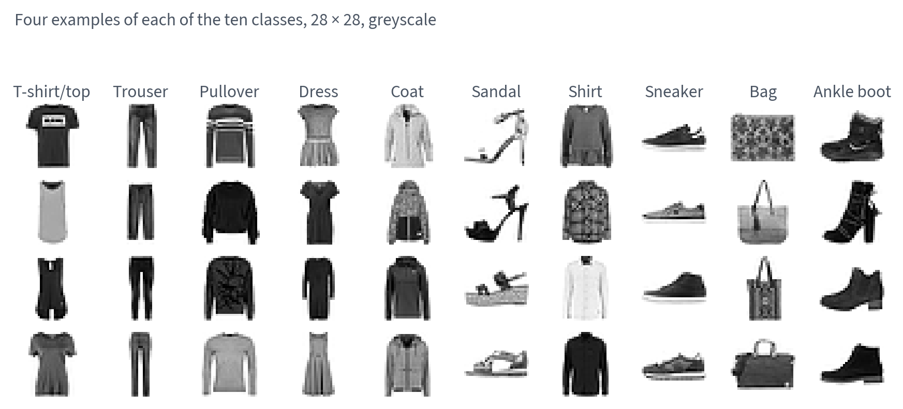
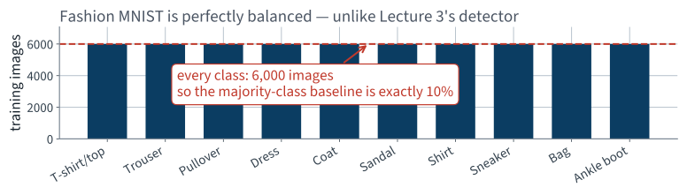
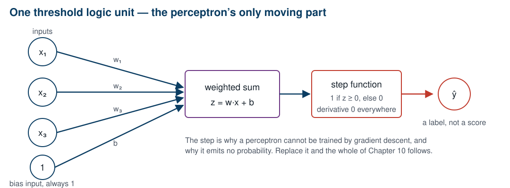
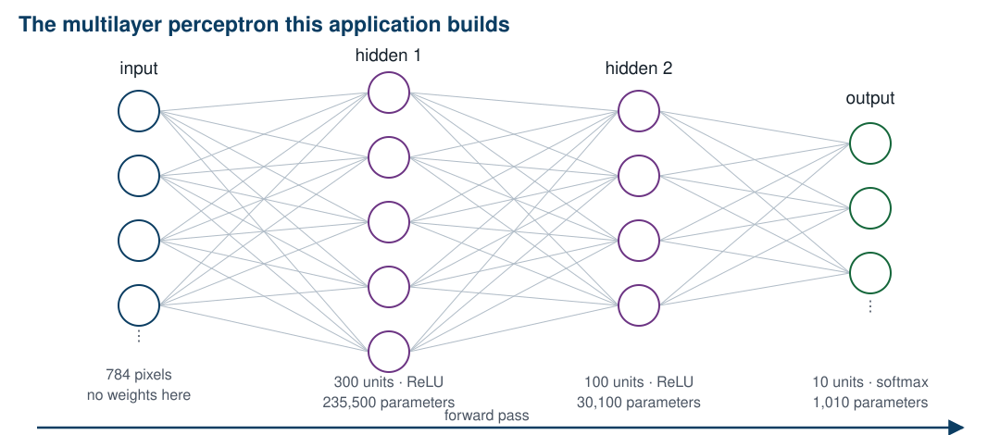
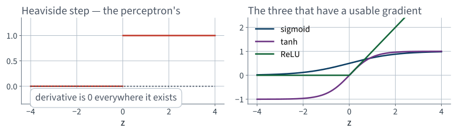
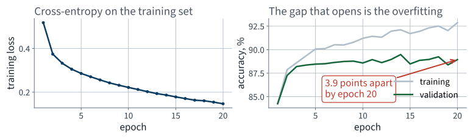
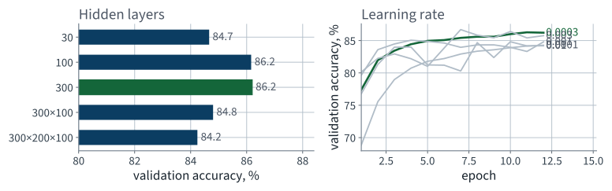
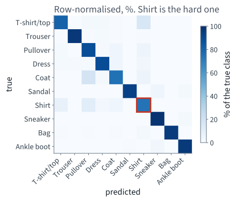

Application 6 · Fashion MNIST
Lecture 11 · Build Géron Ch. 9
Applications of Machine Learning
BSc Mathematics of Artificial Intelligence · Third year
| Part | Lectures | Chapters | Hardware |
|---|---|---|---|
| I · Tabular data and classical models | 1–10 | 1–8 | CPU |
| II · Neural networks | 11–14 | 9–11 | GPU |
| III · Computer vision | 15–18 | 12 | GPU |
| IV · Sequences, language, multimodality | 19–24 | 13–16 | GPU |
Everything from Part I still applies. Split before you fit, never tune on the test set, report a spread. Nothing about a neural network repeals any of it.
No mathematical thread today. Build lectures have none; the thread arrives in the next lecture, and it will be about the thing you are about to call without looking at it.
Part one
15 minutes · the problem, the data, the stakeholder
A document-processing bureau scans incoming items and routes each one to one of ten queues.
Ten classes, one label each, no ranking, no probability requirement stated. Write that down: it decides the output layer.
A different problem needs a different metric. The habit worth keeping from Lecture 4 is not “accuracy is bad”; it is “look at the class counts before you choose”.
The bureau's archive is confidential. Fashion MNIST is the dataset Chapter 9 uses, and it has the same shape of problem: small greyscale images, ten classes, one label each.
| Property | Value |
|---|---|
| Training images | 60,000 |
| Test images (shipped as a test set) | 10,000 |
| Image size | 28 × 28 |
| Features per image, flattened | 784 |
| Pixel values | 0–255, integer |
| Classes | 10 |
The test split is the one the dataset ships with, so your number is comparable with every published result on it.

Look at the last four columns. Pullover, coat and shirt are the same silhouette at this resolution — and that is where the errors will be.
Three of these are upper-body garments seen from the front. Ask the room which three, before the model tells you.

Ten bars, all exactly 6,000. Balanced by construction — which is a property of this dataset, not of image classification.
We flatten each 28 × 28 image into a vector of 784 numbers and hand it to the model as an ordinary table of features.
That is a real loss, and repairing it is Chapter 12 — four lectures away. Today we pay it, and it is the honest starting point.
Divide by 255, so every feature lies in $[0, 1]$.
StandardScaler estimates a mean and a variance from data
and must therefore be fitted after the split. x / 255 estimates
nothing.
| Set | Images | Used for |
|---|---|---|
| Training | 55,000 | fitting the weights |
| Validation | 5,000 | choosing hyperparameters, by hand, today |
| Test | 10,000 | once, at the very end |
The validation set is carved out of the training half with a fixed seed. It exists because we are about to try ten configurations, and Lecture 2 established what happens to a number chosen on the set it is reported on.
Part II onwards, every lecture assumes an accelerator. Today is the last one that does not.
Part two
15 minutes
The operator asked: how often is it right?
That is accuracy. Lecture 4 spent ninety minutes on why accuracy is a trap — so before using it, check the condition under which it failed.
| Lecture 4 | Today |
|---|---|
| One class held 10%% of the data or worse | Every class holds exactly 10%% |
| “Always negative” scored above 90% | “Always k” scores 10.0%% |
| Accuracy hid a useless model | Accuracy cannot hide one |
The rule you keep is not “never use accuracy”. It is count the classes first.
majority = np.bincount(y_fit).argmax()
baseline = np.full(len(y_test), majority)
print(accuracy_score(y_test, baseline)) # 0.1
Ten classes, 1,000 test images each, one guess for every image.
Not an estimate and not a convention — a measurement, and it happens to be exact.
10.0%%
Predict the same class every time.
The gap you are about to estimate is ninety points wide. That is a lot of room to be wrong in, which is exactly why the commitment is worth making.
Metric:
Accuracy a good sorting machine would need: %
Accuracy I expect from the model we build today: %
You are not guessing in the dark: always-one-class scores 10.0%%, and a perfect machine scores 100. Saying where between them is the whole exercise.
A committed number you can revise afterwards is not a prediction; it is a memory of having had an opinion.
Part three
60 minutes · the simplest network that runs
Open Lecture 11 in Google Colab
McCulloch and Pitts, 1943: a very simplified model of a biological neuron, which fires when enough of its inputs fire.
Chapter 9 opens with this and then drops it. So do we.
A weighted sum and a threshold. That is the entire unit, and the weighted sum is Lecture 2's linear model wearing a different name.

The step function is the problem. Its derivative is zero everywhere it exists, so there is no gradient to descend.
If the unit was right, nothing changes. If it fired when it should not have, the weights on the active inputs go down. Rosenblatt, 1957 — and it converges only if the classes are linearly separable.
No loss function appears anywhere in that rule. That is the tell: this is not gradient descent, and it does not generalise.
A TLU draws one straight line. Some problems need two.
| $x_1$ | $x_2$ | XOR |
|---|---|---|
| 0 | 0 | 0 |
| 0 | 1 | 1 |
| 1 | 0 | 1 |
| 1 | 1 | 0 |
No line separates the two 1s from the two 0s. Minsky and Papert said so in 1969 and the field stopped for fifteen years.
The repair is embarrassingly simple: stack them. Two layers of TLUs solve XOR exactly.
Fully connected, or dense: every unit of one layer receives every unit of the previous one. That is where the parameters are.
Two or more hidden layers and the book calls it a deep neural network. The word means nothing more than that.

Almost all the parameters are in the first layer, because it is the one attached to 784 inputs.
Suppose the activation were the identity. Then
A single affine map. Two hundred stacked layers would still be a single affine map.
Depth buys you nothing without a nonlinearity between the layers. This is one line of algebra and it is the reason activation functions exist at all.

Gradient descent needs a slope to descend. The step has none; the other three do.
| Activation | Range | Cost | Problem |
|---|---|---|---|
| Sigmoid | $(0, 1)$ | an exponential | saturates at both ends |
| tanh | $(-1, 1)$ | an exponential | saturates at both ends |
| ReLU | $[0, \infty)$ | a comparison | flat below zero |
max(0, z) is fast, does not saturate above, and
in practice trains better. It is the default in Chapter 10 and it is our
default today.
“Flat below zero” is a real defect and it has a name — dying ReLUs. It is diagnosed in Lecture 14, not here.
The whole forward pass is a handful of matrix products. That is why a GPU helps at all: a GPU is a machine for doing exactly this.
784 x 300 + 300 = 235,500 layer 1
300 x 100 + 100 = 30,100 layer 2
100 x 10 + 10 = 1,010 output
--------
266,610 total
266,610 parameters, fitted from 55,000 images.
Ten classes, mutually exclusive. Ten output units, and a softmax across them:
argmax is unchanged by the softmaxThe full properties of softmax — shift invariance, the gradient, why the loss consumes logits rather than probabilities — are thread 11, in Lecture 22.
The target is one-hot, so nine of the ten terms are zero. The loss is minus the log probability the model assigned to the right answer, and it goes to infinity as that probability goes to zero.
Chapter 4 called this log loss when there were two classes. Same object.
Backpropagation: one forward pass to compute the loss, one backward pass to compute every partial derivative, one gradient-descent step.
solver="adam". Plain gradient descent takes a step
proportional to the gradient; Adam keeps a running average of the gradient
and of its square, and scales each parameter's step by the second.
learning_rate_init still cost us points on the
previous sweep — less sensitive is not insensitiveMomentum, RMSProp, Adam and the rest are Chapter 11 and Lecture 14. Today it is a default we accepted knowingly, which is the only acceptable way to accept a default.
| Hyperparameter | Typical value |
|---|---|
| Input units | one per input feature |
| Hidden layers | 1 to 5, problem dependent |
| Units per hidden layer | 10 to 100, problem dependent |
| Output units | one per prediction dimension |
| Hidden activation | ReLU |
| Output activation | none; ReLU if the output must be positive; sigmoid or tanh for a bounded range |
| Loss | MSE, or Huber if there are outliers |
Chapter 10. The two rows that matter are the last two, and they are the two people get wrong.
| Task | Output units | Output activation | Loss |
|---|---|---|---|
| Binary | 1 | sigmoid | binary cross-entropy |
| Multilabel binary | one per label | sigmoid | binary cross-entropy |
| Multiclass | one per class | softmax | cross-entropy |
Our task is the third row: ten mutually exclusive classes, so ten units, softmax, cross-entropy.
The distinction between rows two and three is not cosmetic. Multilabel asks ten independent yes/no questions; multiclass asks one ten-way question. Softmax couples the outputs; ten sigmoids do not.
from sklearn.neural_network import MLPClassifier
clf = MLPClassifier(hidden_layer_sizes=(300, 100),
activation="relu",
solver="adam",
learning_rate_init=1e-3,
batch_size=128,
max_iter=20,
random_state=42)
clf.fit(X_fit, y_fit)
Nine lines, and every architectural decision from the last
ten slides is one of the arguments. The softmax and the cross-entropy are not
arguments — MLPClassifier chooses them for you, from the
number of classes it sees in y_fit.
| Argument | Default | Consequence |
|---|---|---|
learning_rate_init | 0.001 | tuned for inputs of order one |
max_iter | 200 | epochs, not iterations; the name is wrong |
batch_size | min(200, n) | silently different on a small set |
early_stopping | False | runs the full budget regardless |
n_iter_no_change | 10 | stops early anyway, via tol |
Reviewer question 5, every time: what is the default I did not ask for? Two of these five will bite us within the hour.
| Word | Means | Here |
|---|---|---|
| Batch | the instances used for one weight update | 128 |
| Step, or iteration | one weight update | 430 per epoch |
| Epoch | one complete pass over the training set | 20 of them |
Scikit-Learn calls the number of epochs
max_iter. It is not iterations. Read the docstring, not the
parameter name — and this is not the only library that does it.
| Quantity | Measured |
|---|---|
| Training images | 55,000 |
| Epochs | 20 |
| Wall clock, CPU | 125 s |
| Validation accuracy | 88.94%% |
| Test accuracy | 88.02%% |
| Baseline | 10.0%% |
It works. Hold on to the wall clock — it is the number the next lecture repairs.

The two accuracy curves separate and stay separated. That gap is overfitting, and it is Lecture 2's table drawn as lines.
| Repair | Available today | Taught in |
|---|---|---|
| Stop when validation stops improving | early_stopping=True | Lecture 6, applied here |
| Penalise large weights | alpha | Lecture 6 |
| Dropout | not available | Lecture 12, then 14 |
| Batch normalisation | not available | Lecture 14 |
| More data, or augmented data | not available | Lecture 16 |
Three of the five repairs are not reachable from this library at all. Note which ones, and why: they all need a hook inside the training loop.
Under-specified in exactly one place. Find it before the next slide — you have thirty seconds.
from sklearn.neural_network import MLPClassifier
X = train_ds.data.numpy().reshape(60000, -1).astype("float32")
y = train_ds.targets.numpy()
clf = MLPClassifier(hidden_layer_sizes=(300, 100), max_iter=12,
random_state=42).fit(X[:12000], y[:12000])
print(clf.score(X_val, y_val))
It runs. It imports nothing exotic. It prints a number in the eighties, which is a great deal better than 10.0%% and therefore looks like a result.
What is the default I did not ask for?
.astype("float32") changes the type. It does not change the
range. The pixels are still 0 to 255, and
learning_rate_init=0.001 is Scikit-Learn's default
for inputs of order one.
Nothing in the prompt said “scale the pixels”. Nothing in the output said it had not happened.
| Inputs | Validation accuracy | Final training loss |
|---|---|---|
| 0 to 255, as the assistant wrote it | 79.98%% | 0.434 |
| 0 to 1 | 84.80%% | 0.265 |
4.82 accuracy points, on 10,000 images over 12 epochs.
Report it honestly, including its size. This is not a catastrophe; it is a silent, free loss that nothing in the run announces. The reason it is not worse is that ReLU does not saturate above — with sigmoid units the same code would have gone nowhere at all.
The vague prompt was not wrong about what to build. It was silent about the conditions under which the thing works — and an assistant fills silence with defaults.
| Knob | What it changes |
|---|---|
| Number of hidden layers | how many compositions the function can have |
| Units per layer | how much can be represented at each stage |
| Learning rate | the size of every gradient step |
| Batch size | how noisy each step is, and how fast an epoch runs |
| Epochs | how long before you stop |
Ten fits, by hand, on a 10,000-image subset so they fit in the lecture. Five architectures, then five learning rates.

Both panels span about two accuracy points. Neither knob dominates — and the widest architecture is not the winner.
| Hidden layers | Parameters | Validation accuracy | Seconds |
|---|---|---|---|
| 30 | 23,860 | 84.66%% | 169 |
| 100 | 79,510 | 86.16%% | 225 |
| 300 | 238,510 | 86.20%% | 347 |
| 300, 100 | 266,610 | 84.80%% | 555 |
| 300, 200, 100 | 316,810 | 84.24%% | 841 |
On this subset, depth loses. One hidden layer of 300 beats both deeper networks, and the deepest is the worst and the slowest.
| Learning rate | Validation accuracy |
|---|---|
| 0.0001 | 84.28%% |
| 0.0003 | 86.22%% |
| 0.001 — the default | 84.80%% |
| 0.003 | 85.76%% |
| 0.01 | 84.20%% |
Same architecture, same data, same seed. The only thing that changed is the size of the step — and the library's default is not the best value on this grid.
Point 3 is the one to remember. You have not optimised anything; you have looked at ten places.
| Run | Images | Epochs | Accuracy |
|---|---|---|---|
| Best in the sweep — 300, at lr 0.0003 | 10,000 | 12 | 86.20%% validation |
| The headline model — 300, 100, at lr 0.001 | 55,000 | 20 | 88.02%% test |
The architecture the sweep ranked fourth of five is the one that wins with all the data.
Split it. Lecture 4 built the confusion matrix for two classes; the object generalises without change.
from sklearn.metrics import confusion_matrix
cm = confusion_matrix(y_test, clf.predict(X_test))
recall = cm.diagonal() / cm.sum(axis=1) # one per class
Ten rows, ten columns. Row $i$, column $j$ counts the images of class $i$ the model called class $j$.

Two classes are far worse than the other eight, and their errors go to a handful of specific neighbours.
Recall on Shirt: 74.1%%, against 98.1%% on Sneaker.
| Shirts are called… | Share of all shirts |
|---|---|
| Pullover | 10.9%% |
| T-shirt/top | 7.8%% |
| Coat | 4.6%% |
Exactly the three classes the room named twenty minutes ago from the image grid — and Coat is nearly as bad, at 74.8%%. The model is not confused about anything a person would find easy.
The headline accuracy does not answer the operator's question. The per-class breakdown does, and it took one extra function call.
88.0%%
Against a 10.0%% baseline, on 10,000 test images the model has never seen.
Test set touched once. Do not tune against it now.
Four things you will want, in the order you will want them.
Try each one now, in the notebook, before the next slide.
125 s
20 epochs, 55,000 images, 266,610 parameters, one CPU.
device=
Scikit-Learn does not support GPUs, and says so in its own FAQ: it is a
deliberate scope decision, not an oversight. The whole of Part II is going
to need one.
>>> MLPClassifier(hidden_layer_sizes=(300, 100), loss="mae")
TypeError: MLPClassifier.__init__() got an unexpected
keyword argument 'loss'
Cross-entropy is hard-coded. That is fine until the operator says “calling a coat a shirt is cheap, calling a bag a sandal is expensive” — a weighted loss, which is one line in a framework that lets you write one.
And that is the ordinary case, not an exotic one.
>>> [a for a in dir(clf) if "grad" in a.lower()]
[]
Backpropagation ran 20 times per image and computed 266,610 partial derivatives on every batch. None of them was kept.
>>> inspect.signature(MLPClassifier.partial_fit)
(self, X, y, classes=None)
partial_fit is the finest handle there is, and one call is one
complete pass over everything you hand it.
fit() contains a for loop over epochs and batches
that you did not write, cannot see, and cannot enter. Every one of the four
walls is the same wall.
This is not a criticism of Scikit-Learn.
MLPClassifier is documented as a convenience, and for a tabular
problem with a standard loss it is the right tool. It is the wrong tool from
here on, and now you know precisely why.
Do not fix anything yet.
| Topic | Chapter |
|---|---|
| Biological neurons, the TLU, the perceptron | 9 |
| The perceptron learning rule, XOR, the MLP | 9 |
| Activation functions and why the step had to go | 9 |
| Regression and classification MLPs, the architecture tables | 10 |
| Softmax and cross-entropy | 4, 10 |
| Fashion MNIST | 9 |
| Confusion matrix, per-class recall | 3 |
Lecture 12 · Fix
What fit() was actually doing
Why the chain rule is run backwards
And two bugs that never raise an exception
Bring the sheet. Bring a GPU runtime.